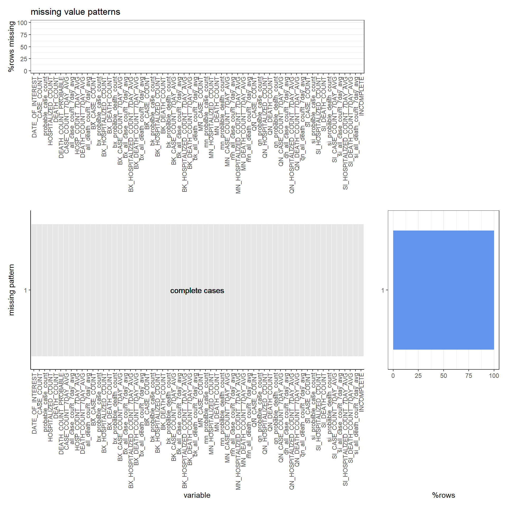
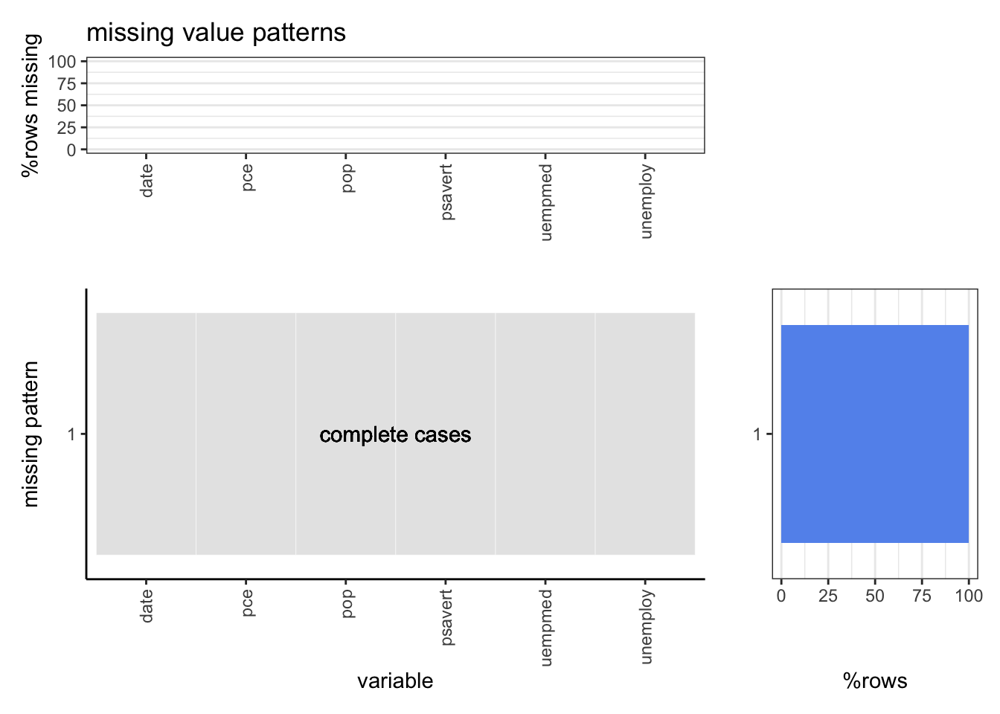
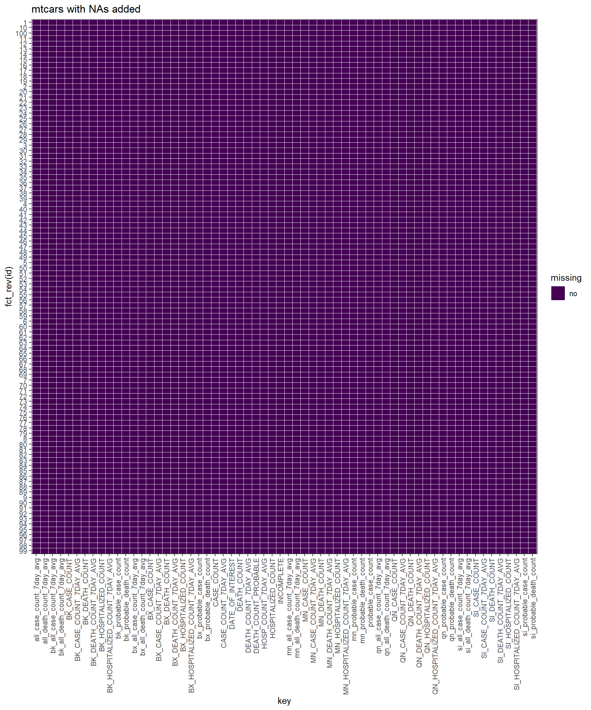
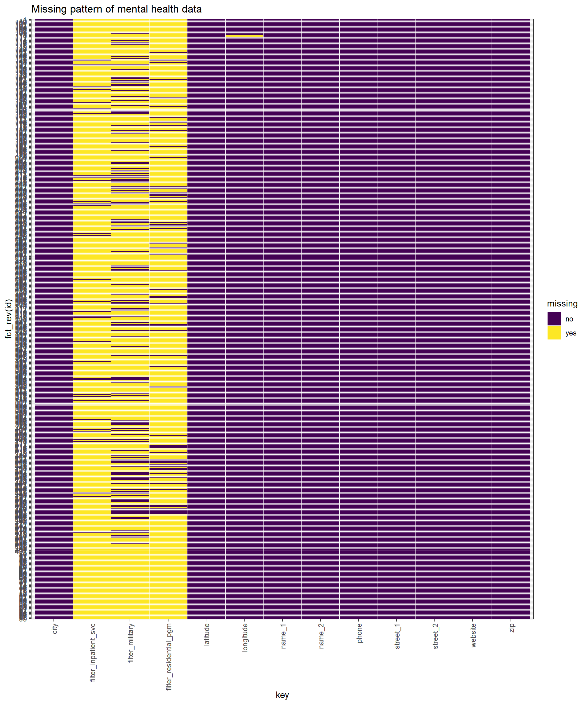
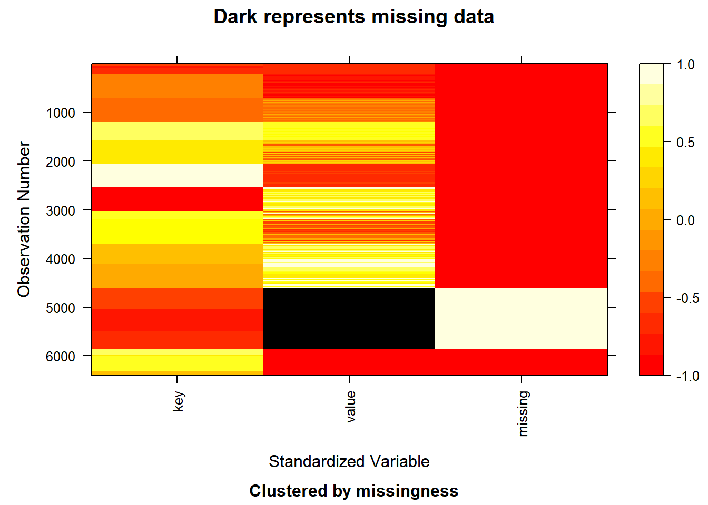
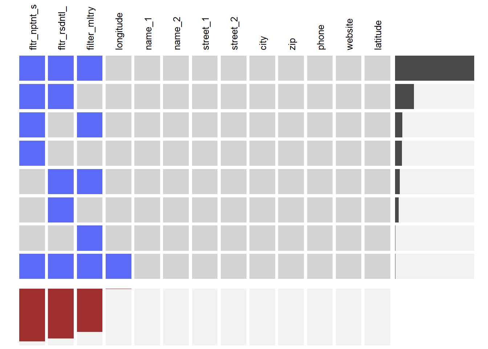

Chapter 4 Missing values
4.0.1 DATA-1 Arrest Historic Data
source("plot_missing.R")
nyc <- read.csv("NYPD_Arrests_Data__Historic_.csv", nrows = 100)tidynyc <- nyc %>%
rownames_to_column("id") %>%
gather(key, value, -id) %>%
mutate(missing = ifelse(is.na(value), "yes", "no"))
ggplot(tidynyc, aes(x = key, y = fct_rev(id), fill = missing)) +
geom_tile(color = "white") +
ggtitle("Missing pattern of arrests data") +
scale_fill_viridis_d() + # discrete scale
theme_bw()+
theme(axis.text.x = element_text(angle = 90, vjust=.5, hjust=1))
x <- missing_data.frame(tidynyc)
image(x)
library(extracat)
visna(nyc, sort = "b")
plot_missing(nyc, percent = TRUE,angle=90,hjust=1)
Insights:
In order to draw the picture more clearly, we select 100 rows of data for missing value plot.
We can conclude that KY_CD and PD_CD have the highest percentage of missing value. Besides, X_COORD_CD, Y_COORD_CD, Latitude and Longitude belong to geographic location information and tend to miss together.
Since the proportion of missing value for all column is small in total, so our dataset has good quality. We may just remove the rows which has missing value when we do the following analysis.
4.0.2 DATA-2 COVID-19 Data
covid <- read.csv("COVID-19_Daily_Counts_of_Cases__Hospitalizations__and_Deaths.csv", nrows = 100)tidycovid <- covid %>%
rownames_to_column("id") %>%
gather(key, value, -id) %>%
mutate(missing = ifelse(is.na(value), "yes", "no"))
ggplot(tidycovid, aes(x = key, y = fct_rev(id), fill = missing)) +
geom_tile(color = "white") +
ggtitle("Missing pattern of COVID-19 data") +
scale_fill_viridis_d() + # discrete scale
theme_bw()+
theme(axis.text.x = element_text(angle = 90, vjust=.5, hjust=1))
x <- missing_data.frame(tidycovid)
image(x)
library(extracat)
#visna(tidycovid, sort = "b")
#visna does not take data without missing valueplot_missing(covid, percent = TRUE,angle=90,hjust=1)
Insights:
- This is no missing value in this dataset so that we don’t need to preprocess it.
4.0.3 DATA-3 Mental Health Data
mental <- read.csv("Mental_Health_Service_Finder_Data.csv")
mental <- select(mental,-contains("flag"))tidymental <- mental %>%
rownames_to_column("id") %>%
gather(key, value, -id) %>%
mutate(missing = ifelse(is.na(value), "yes", "no"))
ggplot(tidymental, aes(x = key, y = fct_rev(id), fill = missing)) +
geom_tile(color = "white") +
ggtitle("Missing pattern of mental health data") +
scale_fill_viridis_d() + # discrete scale
theme_bw()+
theme(axis.text.x = element_text(angle = 90, vjust=.5, hjust=1))
x <- missing_data.frame(tidymental)
image(x)
library(extracat)
visna(mental, sort = "b")
plot_missing(mental, percent = TRUE,angle=90,hjust=1)
Insights:
Firstly, some columns like flag_vet, flag_pw, flag_si and so on have really high missing percentage(100% in our 100 sample), which will be discarded in our further analysis.
In this dataset, the basic information such as name/phone/position is relatively complete while the measurements about mental health has much more missing value. So maybe we can explore the meaning of specific indicators and conclude people’s overall psychological condition in one district to avoid the drawbacks bringed by missing value.